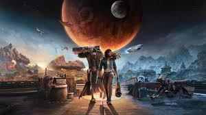

<!DOCTYPE html>
<html lang="ru">
<head>
    <meta charset="UTF-8">
    <title></title>
</head>
<body>

</body>
</html>

<!DOCTYPE html>
<html lang="ru">
<head>
    <meta charset="UTF-8">
    <title>Star_Wars_Outlaws</title>
    <link rel="stylesheet" href="Styles-Sheet.css">
    <link href="https://fonts.googleapis.com/css2?family=Press+Start+2P&display=swap" rel="stylesheet"> <!-- Добавляем шрифт -->
    <style>
        body {
            font-family: 'Press Start 2P', cursive;
            color: white;
            background-color: black;
        }
        h1, p {
            text-align: center;
        }
        img {
            width: 100%;
            height: auto;
        }
    </style>
</head>
<body>

<div class="topnav">
    <a class="active" href="index.html" target="_blank">НА_ГЛАВНУЮ</a>
    <a href="settings.html" target="_blank">НАСТРОЙКИ</a>
    <a href="Forma.html" target="_blank">РЕГИСТРАЦИЯ</a>
</div>


<main>

    <div class="text-board">

        
        <h1>Шедевр Юбисофт!</h1>
        <p>Новое дыхание вселенной ЗВ, реализованное лучшими художниками кампании. Какм же вышел новый шедевр от Юбисофт? Сегодня я расскажу, как можно сделать игру хорошей и плохой одновременно, и как работает отдел толлерантности Юбисофт.
        <br> Star Wars Outlaws – это экшен-адвенчура от Ubisoft, действие которой происходит во вселенной Звездных войн. Игра рассказывает о жизни преступницы Кей Весс, которая пытается совершить крупное ограбление в период между Империей наносит ответный удар и Возвращением джедая.

            Геймплей сочетает открытый мир, перестрелки, стелс и пилотирование космических кораблей. Игроки могут выбирать, как вести себя: заключать союзы или предавать, избегать опасностей или идти напролом.

            Графика и дизайн уровней соответствуют высоким стандартам Ubisoft. Космические и наземные локации, от городов до пустынь, выглядят детализированными и насыщенными. Саундтрек передает дух Звездных войн, добавляя игру в общий канон.

            Проект вызывает большой интерес, так как обещает объединить проработанный сюжет с открытым миром, чего не хватало многим фанатам вселенной. Успех Star Wars Outlaws может стать началом новой серии игр по франшизе.</p>
    </div>
</main>


</body>
</html>